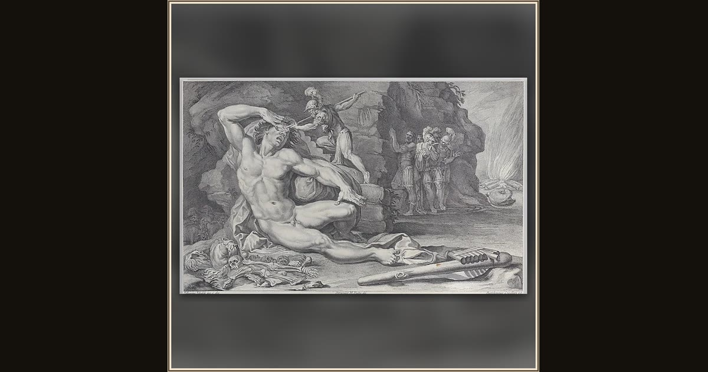

Plate 6: Ulysses driving a burning stake into Polyphemus' eye
Bartolomeo Crivellari; after Pellegrino Tibaldi · 1756 · met
Ulysses drives a burning stake into Polyphemus' eye while the giant recoils and his companions watch; the chorus calls for the shepherd of Aetna to be scorched. (660) Explore its place in Euripides's Plays, Cyclops, line 683.